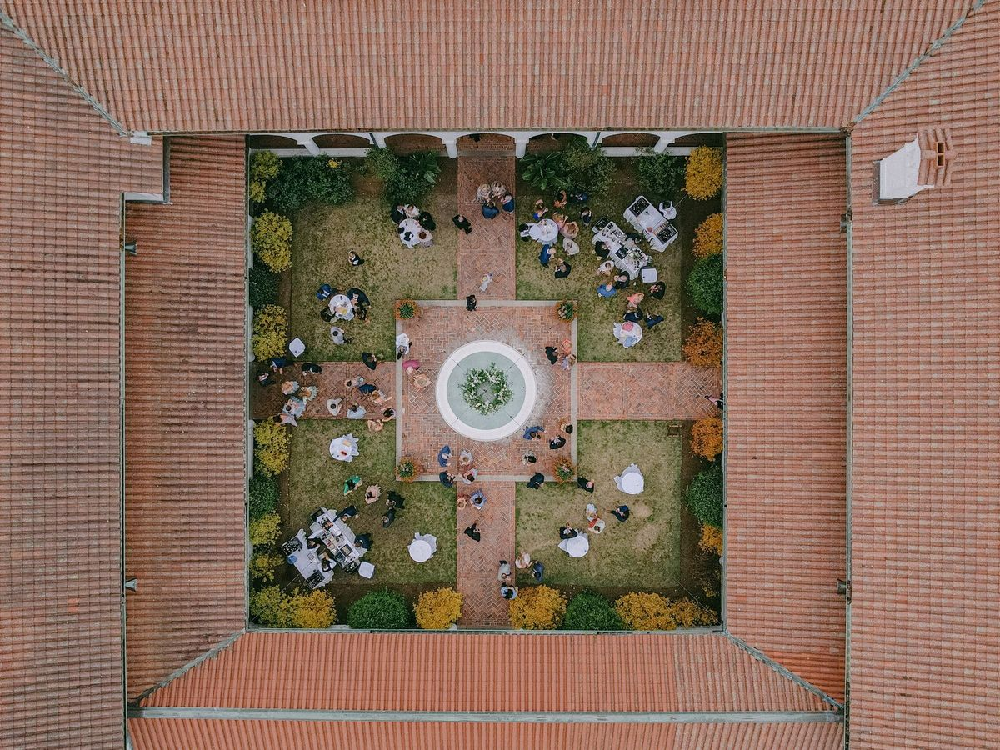

Crane Cottage Courtyard
Jekyll Island Club Resort
Photo · Jillian Knight Photography
Speaking & Workshops
Resonance is a sociological idea: a relationship of call and response between a person and the world around them, the feeling of being recognized, and recognizing back.
You already design for it, even if you've never called it that. When a host names the signature drink after someone the guests will recognize, and a few of them catch it and smile, that is resonance: the design reaches toward the room, and the room answers. It's why we've all seen the massive-budget event fall flat and the shoestring one move everybody in it. You could point to the budget, the aesthetic, the lineup. None of those is the answer, and all of them are. What decides it is whether the room is answering back.
Donald Getz describes event design as both an art and a science. I'd add one thing: resonance is both. It's the material you design in, and it's the thing you can actually measure. Thirteen years planning events taught me to feel it. Graduate school taught me to measure it (I built a dissertation around whether it holds up; it does). Once you can see what makes an event resonate, you can design for it on purpose. That's what Resonance Co. is here to help you do.
Who We Serve
I bring this work to the rooms your community already gathers in. The idea is to meet your members where their attention already lives, rather than asking them to show up somewhere new.
Topics span event experience theory, experiential design strategy, event brand authenticity, and the cultural and anthropological dimensions of gathering. Formats range from keynotes and workshops to guest episodes and virtual sessions.
For professional associations: topics qualify for CMP continuing education hours under EIC domain guidelines.
A single big idea, fully developed. Best for conference general sessions or chapter meetings where you want to shift how your members think about their work.
Framework introduction plus structured application. Members leave with a tool they've already practiced using.
Deep curriculum delivered in a single session. Designed for members who want to do the real work, not just hear about it.
A focused conversation built around one idea, drawn from doctoral research. Designed for podcast hosts and community platforms looking for a voice that comes from the research, not just the hustle. Adaptable as a solo interview, a co-host conversation, or a live member Q&A.
All of the above, adapted for remote delivery.
Keynote, workshop, and intensive formats qualify for CMP continuing education hours under EIC domain guidelines.
Each topic can stand alone or be sequenced into a multi-session curriculum. Keynote, workshop, and intensive topics qualify for CMP continuing education hours under the relevant EIC domain.
Resonance Mapping is the core methodology behind Resonance Co.'s consulting and curriculum. This foundational session introduces what resonance is, why it's the right design goal, and how a three-axis framework (identity, experience architecture, flow state and narrative) gives planners a repeatable system for designing events that move people. It's the session that connects to every other topic on this list. The one that gives experienced practitioners language for what they've always felt but never had a framework to explain.
Everyone in events talks about "experience." Far fewer can say what actually makes one. Drawing on experience economy theory and the research on what attendees genuinely feel in a room, this session gives planners a shared vocabulary for what their events are designed to do, and a clear way to evaluate whether they're doing it. No prior theory background required; appropriate for planners and venue professionals at any stage.
The event industry has spent a decade chasing "elevated." It's producing beautiful, interchangeable events that no one remembers. This session makes the case that the pursuit of elevation often works against resonance: when design prioritizes aesthetic sophistication over authentic identity, it creates events that impress but don't move. Attendees leave with a framework for distinguishing design that performs for an audience from design that speaks to one, and a practical vocabulary for redirecting clients away from trend-driven briefs toward identity-grounded ones.
Draws on original doctoral research to distinguish between event brand authenticity (does this event do what it claims to do?) and event culture authenticity (does this event genuinely belong to the community it serves?). Practical frameworks for how brand decisions, from visual identity to messaging to programming choices, either build or erode the audience trust that drives repeat attendance and word-of-mouth. Relevant for event planners, wedding professionals, and venue owners building or repositioning a brand in a crowded market.
Audiences have become sophisticated at detecting performative authenticity in marketing. They're opting out of it. This session draws on event brand authenticity research to help event professionals write brand copy, social content, and marketing materials that communicate genuine value without tipping into the language patterns audiences have learned to distrust. Practical, and immediately applicable.
The most memorable events don't just happen somewhere. They belong somewhere. This session teaches wedding planners and venue professionals how to read the cultural heritage, history, and identity of a host destination and weave it into event design in ways that feel specific, meaningful, and impossible to replicate. Includes frameworks for heritage research, design translation, and client communication. Particularly relevant for destination wedding planners, venue-based experiences, and events with strong regional or cultural identity.
Event planners have always done something anthropologists would recognize. They design the rituals, symbols, and shared experiences through which communities mark time and make meaning. This session traces the unbroken line from the earliest human gatherings to the events on your calendar right now, revealing how ancient patterns of ritual, celebration, and communal gathering still shape what works in modern event design. Attendees leave with a deeper understanding of why their instincts are right, a vocabulary for the cultural forces operating in every event they plan, and a new way of seeing themselves in their work.
Get in Touch
Whether you’re planning a conference, chapter meeting, podcast episode, or member education series, let’s talk through what would serve your audience best.
Start a conversation